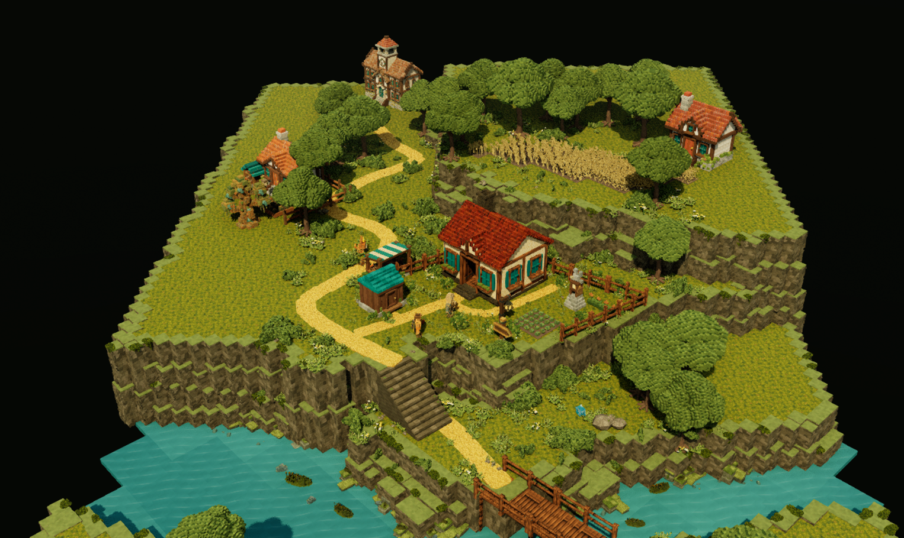
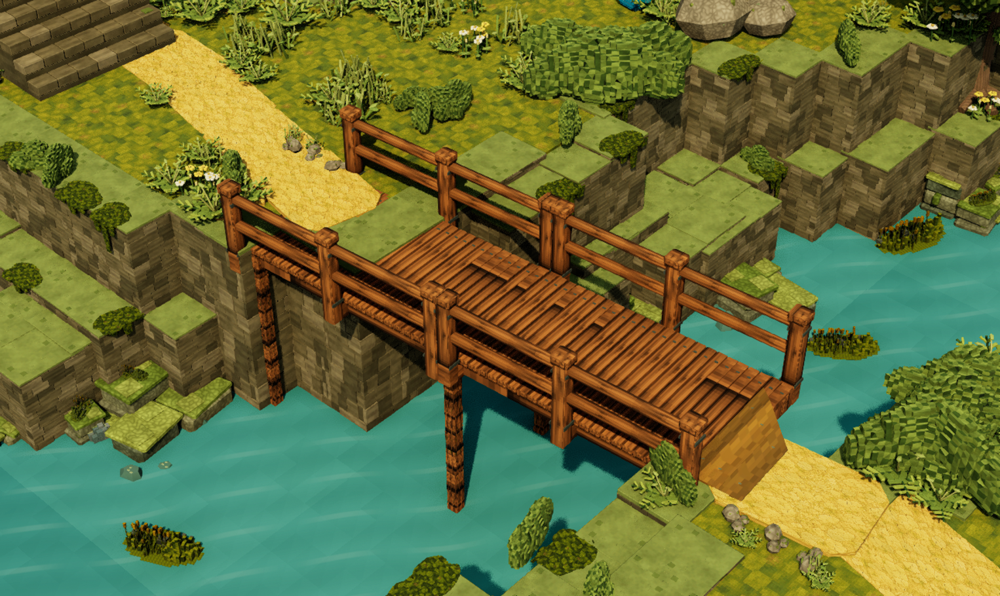
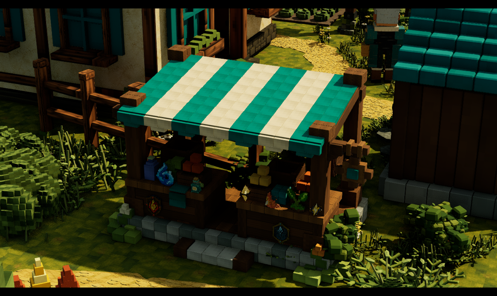
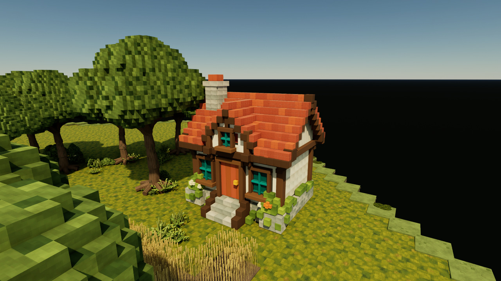
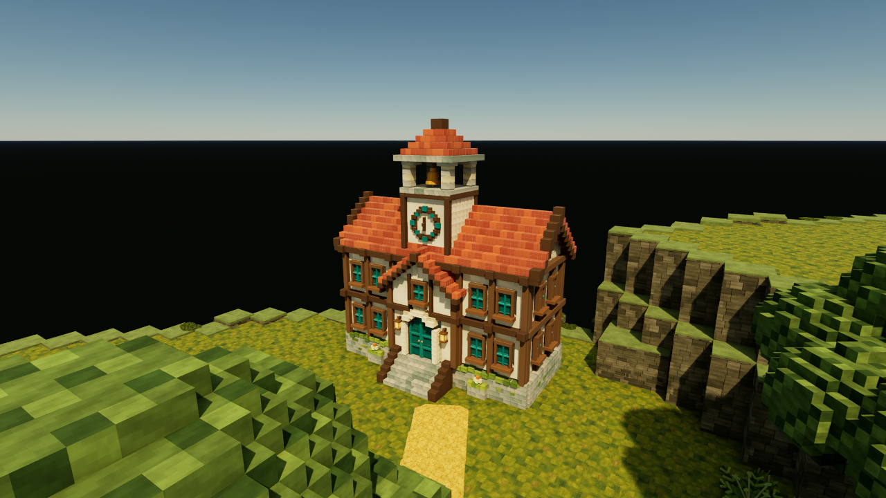
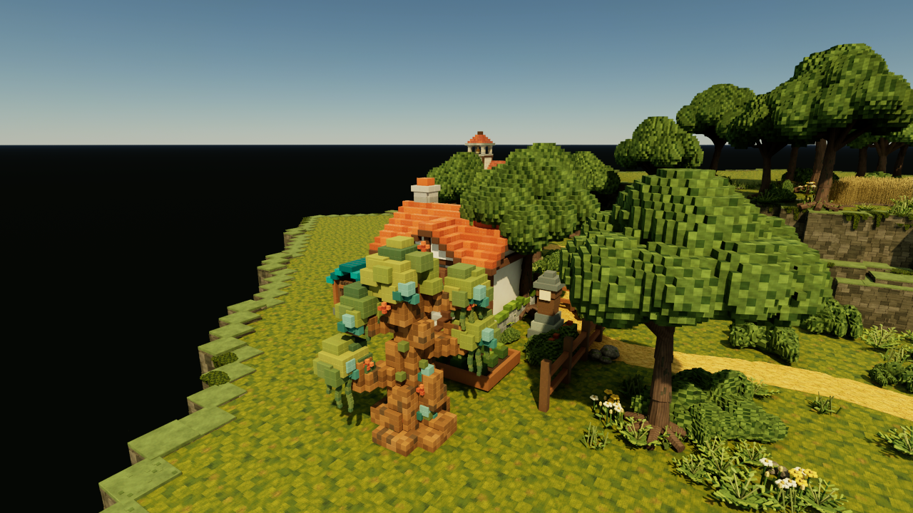
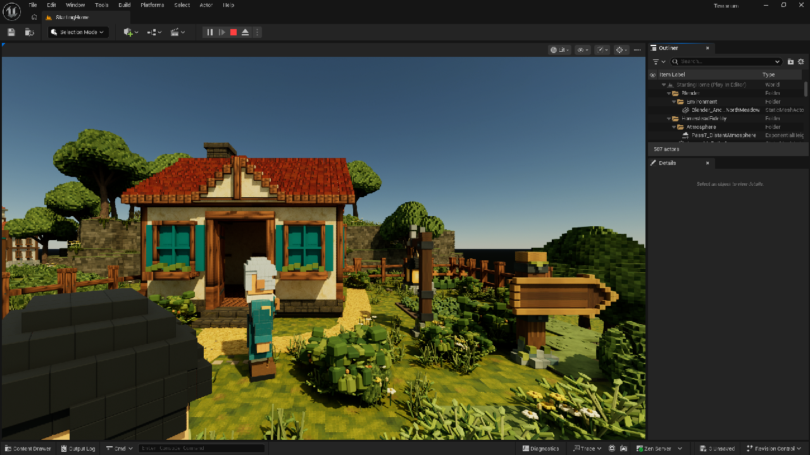

Homestead · continuation
A complete collection.
A place to begin.
Warm timber and plaster above mossy terraces. Fine angular planting, a working path through the home, and a quieter river below.
Integrated · saved · reopened
The remaining
homestead.
The approved eleven families are preserved. Private asset copies extend LOD coverage while keeping the collection's original shapes, placements and material character.

The river
Animated teal currents follow the retained stepped banks.

The market
Stall, props and eight collectibles retain their authored materials.

The lodge
Native near sample from the automatic-LOD camera sweep.

The civic hall
Retained silhouette, roof coverage and material detail.

The compound
Visible structure is intact; nearby trees obscure some surfaces.

At walking height
Fresh default Play after the passive profile; inherited explorer presentation.

Tested in
the editor.
Three fresh workers owned separate art, environment and runtime folders. One coordinator integrated, captured and validated everything in Unreal.
| Check | Result | What it establishes |
|---|---|---|
| Save / switch map / reopen | Passed | Assignments, materials, visibility, counts and transforms persist. |
| Cottage, stairs, both bridge spans | 8 checkpoints passed | CharacterMovement traversal with gravity and collision. |
| Four-building automatic LOD sweep | 543 samples · 20 captures | Automatic settings and sampled visible building integrity. |
| Fresh idle gameplay view | 16.67 ms mean · 16.91 ms p95 | 1,800 editor world-frame samples over 30 seconds. |
| Slowest sampled frame | 54.98 ms | One frame exceeded 50 ms; continuous 60 fps is not guaranteed. |
| Collision query mean | 33.48 µs simple · 35.18 µs complex | 484 traces per mode including Python/engine-call overhead. |
What comes
next.
Homestead art is integrated. Interactive acceptance and the next gameplay scope remain distinct steps.
Interactive acceptance
Physical held-key WASD/mouse behavior and continuous LOD transition smoothness remain unverified. Static samples cannot certify every intermediate frame.
Structural collision
All 17 art placements match inherited collision settings. Dense building geometry still triggers navigation-export warnings; simpler structural collision needs a dedicated pass.
Beyond the home
Character presentation, connected neighborhoods, navigation, district budgets and world streaming remain future work. Settlement-growth gameplay is not implemented.